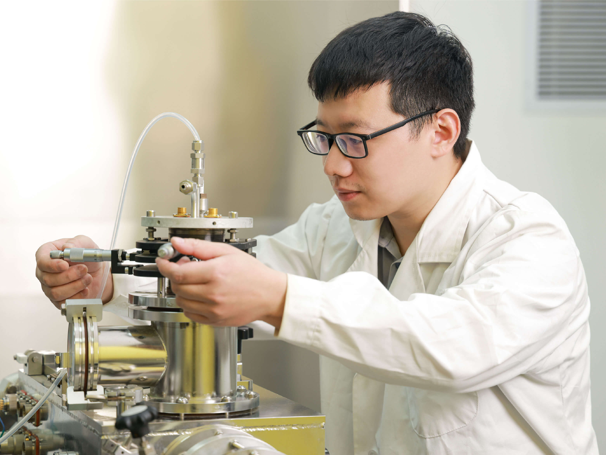

谢庆国
中国籍，博士。华中科技大学生命科学与技术学院生物医学工程系教授、武汉光电国家研究中心研究员。数字PET发明人，国家杰出青年科学基金获得者。专注于探测与成像方法研究和仪器研制。发明的多阈值采样方法（Multi-Voltage Threshold）应用于医疗器械、科学仪器、辐射探测、石油探井等领域。
肖鹏
中国籍，博士。华中科技大学生命科学与技术学院生物医学工程系教授、武汉光电国家研究中心研究员。专注于智能成像方法研究与仪器研制，围绕“面向PET数据流的信号处理及图像重建”、“智能化应用适应性PET系统设计”两方面开展工作。
Nicola D' Ascenzo
意大利籍，博士。华中科技大学生命科学与技术学院生物医学工程系教授、武汉光电国家研究中心研究员。在中意国际科技交流中被意大利总统授予“莫里塞大区大使”荣誉称号，国家高层次人才项目的获得者。专注于单光子探测芯片中光子响应机制与信号处理方法、新型PET系统设计与成像方法研究（头盔PET、Agri-PET）。致力于全数字光电探测器件SiPM开发和便携式PET成像设备研制。

郑睿
中国籍，博士
中国科学技术大学信息科学技术学院电子工程与信息科学系（6系）特任副研究员。
专注于单光子辐射探测新材料和新方法研究。建立了高性能闪烁晶体设计到应用的全链技术平台，聚焦新型闪烁发光机理和极限性能闪烁晶体材料开发。
李炳轩
中国籍，博士
合肥综合性国家科学中心人工智能研究院副研究员
国家重点研发计划项目首席科学家，中国数字PET行业标准主要起草人之一。专注于新型PET成像系统设计和医学图像重建。
奚道明
中国籍，博士
合肥综合性国家科学中心人工智能研究院副研究员
专注于光子计数X射线探测器的设计与成像系统的研制，提出了FPGA-only MVT digitizer技术方案并设计了相应的电路系统。